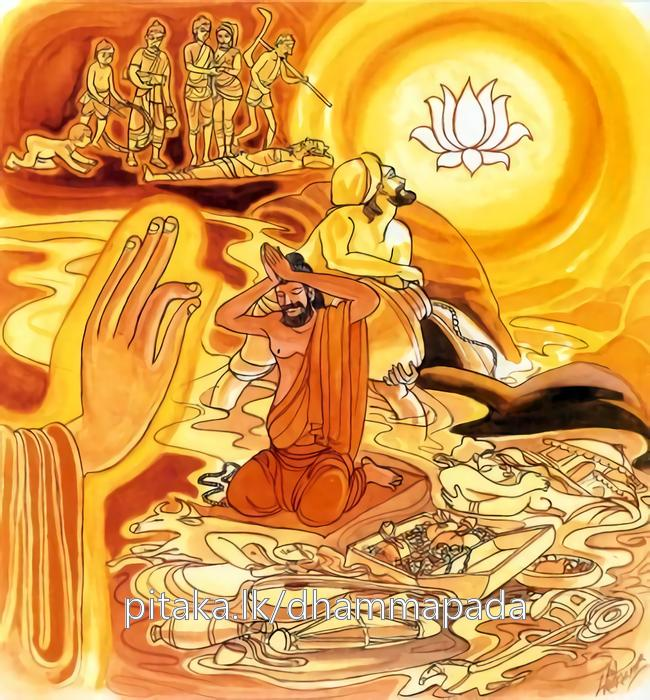

26-1 ප්රසාදබහුල බ්රාහ්මණයෙක්
මෙම කතාව ධම්මපද අටුවාවෙන් ද කියවන්න.
ඡින්ද සොතං පරක්කම්ම කාමෙ පනුද බ්රාහ්මණ
සඞ්ඛාරානං ඛයං ඤත්වා අකතඤ්ඤූ’සි බ්රාහ්මණ.
බමුණ, වීර්ය්ය කොට තෘෂ්ණා දියපහර සිඳ පිය. (එය පිණිස) වස්තුකාම ක්ලේශකාමයන් (සිතෙන්) පහ කරව. බමුණ, සංස්කාරයන්ගේ විනාශය විවසුන් නුවණින් දැන, අකෘතඥ (නිවන් දන්නේ) වෙහි ය.

ප්රසාදබහුල බ්රාහ්මණයෙක් බුදුරජුන් වෙතින් බණ අසා පහන් සිත් ඇතියේ භික්ෂූන් සෙළොස් නමකට තමන්ගේ ගෙයි නිතිබත් පිහිටු වී ය. එ බමුණු භික්ෂූන් ගෙට වැඩිය කල්හි පාත්ර ගෙණ “පිනවත් රහතුන් වහන්සේ වඩිත්වා, පින්වත් රහතුන් වහන්සේ වැඩ හිඳිත්වා”යි යම් කිසිවක් කියනුයේ නම් අර්හත්ත්වවාදයෙන් යුත් බසක් ම කියන්නේ ය. ඔවුන් අතුරෙහි සිටි පෘථග්ජනභික්ෂූන් වහන්සේලා “මෙ තෙමේ අප කෙරෙහි රහත් ය යන අදහස් ඇතියේ”ය යි ද, රහතුන් වහන්සේලා “මෙ තෙමේ අප රහතුන් බව දනී ය”යි ද සිතූහ. මෙසේ ඒ සියලු දෙනා වහන්සේ ම කුකුස් කරන්නෝ ඔහුගේ ගෙට නිතිබත් පිණිස නො වැඩියහ. බ්රාහ්මණ තෙමේ දුක් ඇතියේ නො සතුටු සිත් ඇතියේ “ස්වාමීන් වහන්සේලා මාගේ ගෙට නො වඩින්නාහු කුමක් නිසා”යි දැන ගණු රිසියෙන් විහාරයට ගොස් බුදුරජුන් වැඳ එ පුවත සැල කොට සිටියේ ය. එකල්හි බුදුරජානන් වහන්සේ භික්ෂූන් අමතා “මහණෙනි! තමුසේලා බමුණාගේ ගෙට සිඟා නො යන්නහු කුමක් නිසා?”යි අසා වදාළ සේක. භික්ෂූහු බමුණාගේ ටෙ නො යෑමෙහි හේතුව බුදුරජුන්ට දන්වා සිටියහ. එවිට බුදුරජානන් වහන්සේ “මහණෙනි! තමුසේලා අර්හත්ත්වවාදය ඉවසහු දැ?”යි අසා වදාළ කල්හි “ස්වාමීනි! අපි එය නො ඉවසමු”යි කීහ. එවිට “මහණෙනි! මෙය මිනිසුන් විසින් පහන් සිතින් කියන්නෙකි, පහන් සිතින් කියන බසෙහි ඇවැත් නැත, තවද මෙය බමුණාගේ රහතුන් කෙරෙහි වූ අධික වූ ප්රෙමයෙකි, එහෙයින් තමුසේලා ද තෘෂ්ණා නැමැති සැඩපහර සිඳ හැර රහත් වන්නට වැර කරවු”යි වදාරා මේ ධර්මදේශනාව කළ සේක.
ඡින්ද සොතං පරක්කම්ම කාමෙ පනුද බ්රාහ්මණ!,
සඞ්ඛාරානං ඛයං ඤත්වා අකතඤ්ඤුසි බ්රාහ්මණාති.
බ්රාහ්මණය! පරාක්රම කොට තෘෂ්ණාස්රෝතස සිඳ ලව. කාමයන් දුර ලව. බ්රාහ්මණය! සංස්කාරයන්ගේ විනශය දැන අකෘතඥයෙක් වන්නෙහි.
ඡින්ද සොතං පරක්කම්ම කාමෙ පනුද බ්රාහ්මණ = බ්රාහ්මණය! පරාක්රම කොට තෘෂ්ණාස්රෝතස සිඳ ලව. දුර ලව.
සීමා නියමයක් නො දත හැකි කලක් මුළුල්ලෙහි ඇස - කන් - නාස් ඈ දොරටු සයෙන් අතර නෙ තබා ගපා යන තෘෂ්ණාස්රෝතස සුලුපටු වැරයෙකින් සිඳහරිණු නො හැකි ය. ඒ පිණිස මහත් වූ ම උත්සාහයෙන් කළ යුතු ය. ඒ මේ උත්සාහය ද නුවණ හා එක්විය යුතු ය. එසේ නුවණින් යුක්ත වූ උත්සාහයෙන්, උත්සාහ ඇතියහු විසින් ම තෘෂ්ණාව සිඳ හැරිය යුතු ය. ඒ සඳහා ම වස්තු කාමයන් නිසා නගිනා ක්ලේශකාමයත් වස්තුකාමයත් සිතින් බැහැර කළ යුතු ය.
මෙහි ‘සොත’ නම්, තෘෂ්ණාව ය. ලොව පුරා සිටුනා සත්ත්වයන් ඒ ඒ භවයට ඇද ගෙණ ගසා ගෙණ යන බැවින් තෘෂ්ණාව සැඩ පහරක් වැනි බැවින් සෝත නම් වූ ය. ආදියක් නො පෙණෙන කාලයක සිට නො සිඳ පැවැත එන ෂඩ්ද්වාරික වූ ඒ මේ තෘෂ්ණාස්රෝතස ස්වල්පවීර්ය්යයෙකින් නො සිඳිය හැකි බැවින් අධික වීර්ය්යයෙන් හෙවත් ඥානසම්ප්රයුක්ත වූ සම්යක් ප්රධාන වීර්ය්යයෙන් ම සිඳ හැරිය යුතු ය,යි ‘පරක්කම’ යන ක්රියා පදයෙන් දක්වා වදාළ සේක.
ආරම්භධාතු - නික්කමධාතු - පරක්කමධාතු යි මෙහි අවස්ථා තුනෙක් වන්නේ ය. එහි ප්රථමාරම්භ වීර්ය්යය ‘ආරම්භධාතු’ නම්. කුසීතකමින් නික්ම ගිය එයට වඩා බලවත්තර වීර්ය්යය ‘ නික්කමධාතු’ නම්. මතු මත්තෙහි විශේෂය එළවන බැවින් එ දෙකටම වඩා බලවත්තම වීර්ය්යය ‘පරක්කමධාතු’ නම්. ආරහ්භය කාමයන් දුරලනු පිණිස ය. නික්කමය ක්රෝධය උගුළුවාලනු පිණිස ය. පරක්කමය සසර බැඳුම් සිඳලනු පිණිස ය,යි අටුවායෙහි කියන ලද්දේ ය. ‘පරක්කම’ යන මේ ක්රියාපදයෙන් ගැණෙනුයේ මේ තෙ වැනි ව කියූ පරාක්රමවීර්ය්ය ය.
‘කාම’ නම්, වස්තුකාම ක්ලේශකාමයෝ ය. යට කියන ලදී. [1] ‘පනුද’ යනු, ක්රියා පද යි. ‘බැහැර කරව’ යන අරුත්. ‘නුද’ යන ක්රියා පදය ‘ප’ යන උපසර්ගයෙන් වැඩී සිටියේ ය. එහෙයින් කාමයන් කිසිවක් ඉතිරි නො කොට බැහැර ලව යන අරුත් ගන්නේ ය. ප යනු, ආදිකර්ම - උදීර්ණ - භෘශ - ඓශ්වර්ය්ය - සංභව - වියොග - නියොග - තෘප්ති - ශුද්ධි - ඊච්ඡා - ශක්ති - ශාන්ති - පූජා - අග්ර - දර්ශන යන අරුත්හි එන්නේ ය. මෙහි භෘශාර්ත්ථයෙහි ආයේ ය.
‘බ්රාහ්මණ’ යන මෙයින් “ඛීණාසවානං ආලපනමෙතං” යි කියූ බැවින් රහතුන් වහන්සේ ගැණෙන්නෝ ය. රහතුන් වහන්සේ ය ප්රධාන විසින් බ්රාහ්මණ. එහි ලා යුක්ති මෙසේ දතයුතු ය.
බුදුරජානන් වහන්සේ බුදුවීමෙන් පස්වන සතියෙහි අජපාල න්යග්රොධ මූලයෙහි සමාධියෙන් නැගිට වැඩ හුන් සේක. එ වේලෙහි හුහුඞ්ක ජාතික වූ එක්තරා බමුණෙක් උන්වහන්සේ වෙත එළැඹැ එකත් පසෙක සිට “භවත් ගෞතමයන් වහන්ස! කොතෙකින් බමුණෙක් වේ ද? බමුණු බව කරණ දහම් කවරේ දැ?”යි ඇසී ය. බුදුරජානන් වහන්සේ “යම් බමුණෙක් බැහැර ලූ පාපධර්ම ඇත්තේ ද, ක්රෝධ මාන විසින් හුහුංකාර නැත්තේ ද, කෙලෙස් කසට නැත්තේ ද, සංයත වූ සිත් ඇත්තේ ද, සිවු මග නුවණින් නිවනට පැමිණියේ ද, වැස නිම කළ මගබඹසර ඇත්තේ ද, යමකුගේ සිත්හි කිසි අරමුණෙක ලා නැග එන රාගාදීහු නැත් ද හෙ තෙමේ මම බ්රාහ්මණ වෙමි යි බ්රහ්මවාදය දහම් නයින්, කියන්නේ ය”යි එයට පිළිතුරු විසින් වදාළ සේක.
මේ ඒ දේශනාව:
“යො බ්රාහ්මණො බාහිතපාපධම්මො
නිහුහුඞ්කකො නික්කසාවො යතත්තො,
වෙදන්තගූ වුසිතබ්රහ්මචරියො
ධම්මෙන යො බ්රහ්මවාදං වදෙය්ය
යස්සුස්සදා නත්ථි කුහිඤ්චි ලොකෙ” යනු.
තව ද දවසෙක බුදුරජානන් වහන්සේ ජෙතවනාරාමයෙහි වැඩ වසන වේලේහි ශාරීපුත්ර - මහාමෞද්ගල්යායන - මහාකාශ්යප - මහාකාත්යායන - මහාකොට්ඨිත - මහාකප්පින - මහාචුන්ද - රේවත - ආනන්ද යන මහාස්ථවිරයන් වහන්සේලා තමන් වහන්සේ වෙත එනු දැක එහි සිටි භික්ෂූන් අමතා “මහණෙනි! මේ බමුණෝ එති, මේ බමුණෝ එති”යි වදාළ සේක. එ කල්හි එහි සිටි භික්ෂු නමක් “ස්වාමීනි! කොතෙකින් බමුණෙක් වේ ද? බමුණු බව කරණ දහම් කවරේ දැ?”යි ඇසී ය. එකල්හි බුදුරජානන් වහන්සේ “ත්රිවිධ දුශ්චරිත, ද්වාදශවිධ අකුශල චිත්තොත්පාද, දශ අකුශල කර්මපථ යන නන්වැදෑරුම් වූ ලාමකධමූයන් සමුච්ඡෙදප්රහාණ විසින් බැහැර කොට සිටි සෑම වේලෙහි රූපාදී වූ සවැදෑරුම් අරමුණුවල සිහියෙන් යුක්ත ව සිවු ඉරියවු ගෙවන චතුර්විධ ආර්ය්යමාර්ගඥානයෙන් සිඳ හළ සංයෝජන ඇති සිවු සස් දහම් අවබොද කළ එහෙයින් ම ආර්ය්යජාති ඇති භාග්යවතුන් වහන්සේගේ ඖරස පුත්රයෝ මේ සත්ත්වලෝකයෙහි පරමාර්ත්ථ විසින් බ්රාහ්මණ නම් වෙති. ජාතිගෝත්ර නාම විසින් බ්රාහ්මණ නම් නො වෙති” යි මුලින් දෙසන ලද කරුණු ම අන් ලෙසකින් පිළිතුරු විසින් වදාළ සේක.
මේ එය වදාළ සැටි:
“බාහිත්වා පාපකෙ ධම්මෙ යෙ චරන්ති සදා සතා,
ඛීණසංයොජනා බුද්ධා තෙ වෙ ලොකස්මිං බ්රාහ්මණාති” යනු.
“බාහිතපාපත්තා = බ්රාහ්මණො” යනු මෙ කියූ ආර්ය්ය ගුණ ඇති අපගේ ආර්ය්යයන් කෙරෙහි නැගුනේ ය.
“බ්රහ්මං අණතීති = බ්රාහ්මණො” යනු පව්කම් බැහැර නො කොට එක්තරා පුහුදුන් මිනිස් කොටසක් මිනිසුන් කෙරෙන් උසස් කොට දක්වනු සඳහා උන් විසින් ම යොදා ගන්නා ලද්දේ ය.
ආර්ය්ය බ්රාහ්මණයන් අතුරෙහි බුදුරජානන් වහන්සේ ම පරාමර්ත්ථ විසින් බ්රාහ්මණ වන සේක. උන්වහන්සේ සර්වාකාර පරිපූර්ණ වූ දානසංයමාදී වූ වත් පිළිවෙත්හි හා තපශ්චරණයෙහි නිරවශෙෂයෙන් පරතෙරට ගිය සේක. මැනැවින් වැස නිම කළ මගබඹසර ඇති සේක. ආර්ය්යමාර්ගඥානයෙහි කෙළවරට ගිය සේක. සුවිශුද්ධවිද්යාචරණ ඇති සේක. මුළුමනින් සෝදා හළ පාපමල ඇති සේක. නිරුත්තර වූ ආර්ය්යමාර්ගය පවත්වාලන සේක. අති පාරිශුද්ධ වූ ශාසනබ්රහ්මචර්ය්යය ප්රකාශ කරණ සේක. එහෙයිනි බ්රාහ්මණයන් අතුරෙහි උන්වහන්සේ ප්රධාන වන සේක.
පරයෝ “බ්රහ්ම, වෙදඃ, තං අධීතෙ = බ්රාහ්මණඃ” යනු විසිනුදු විවරණය කරත්. බ්රහ්ම නම්, වෙදය යි. එය හදාරණුයේ බ්රාහ්මණ නම් යනු අරුත්. මහබඹහුගේ පුත්ර නු යි බ්රාහ්මණ නම් වෙති යි ද ඔවුහු කියත්. මේ එය: “ප්රජාපතෙඃ අපත්යං බ්රාහ්මණඃ” යනු. ජාතියෙන් කුලයෙන් පැවැත්මෙන් වෙදාද්ධ්යයනයෙන් ශ්රැතියෙන් යන මෙයින් යුක්ත වූයේ බ්රාහ්මණැ යි පරයන් විසින් කියන ලදි.
“ජාත්යා කුලෙන වෘත්තෙන ස්වාද්ධ්යායෙන ශ්රැතෙන ච,
එහිර්ය්යූකෙතා හි යඃ තිෂ්ඨෙන්තිත්යං ස ද්විජ උච්යතෙ”
යනු එහිලා ආයේ ය. මොවුහු තමන් බ්රාහ්මයාගේ කටින් උපන් බැවින් බ්රාහ්මණ නම් වී ය යි ද කියා ගණිත්. “බ්රහ්මණඃ මුඛාජ්ජාතඃ = බ්රහ්මණඃ” යනු ඒ කීම ය.
ශෘලමලද්වීප - කුශද්වීප - ක්රෞඤ්චද්වීප - ශාකද්වීප - පුෂ්කරද්වීප යන ද්වීප විසින් ස වැදෑරුම් කොට, අද්ධ්යයන - යජන - දාන යන ධර්ම විසින් තෙ වැදෑරුම් කොට, අද්ධ්යාපන - යාජන - ප්රතිග්රාහක යන ජීවිකාවෘත්ති විසින් තෙ වැදෑරුම් කොට, බ්රහ්මචාරී - ගෘහස්ථ - වානප්රස්ථ - සන්යාසී යන ආශ්රම විසින් සිවු වැදෑරුම් කොට ද බමුණෝ බෙදා දක්වන ලදහ. මුල් පිළිබඳ කතා ය ඉතා දිග ය. මහාභාරත, වහ්නිපුරාණ, කල්කිපුරාණ, පද්මපුරාණාදියෙහි ඒ දැක්ක හැකි ය.
බුදුරජානන් වහන්සේ ජාතිගෝත්ර විසින් වෙන් කට හැකි බමුණෙක් නැතැ යි වදාළ සේක. බ්රහ්මයාගේ කටින් උපන්නෙක් නැතැ යි වදාළ සේක. වෙදය හදාරණ බැවින් බමුණු වූවෙක් නැතැ යි වදාළ සේක. ලෝකයෙහි ලා ‘බ්රාහ්මණ’ යන ව්යවහාරමාත්රයෙහි සිටී ය යි වදාළ සේක. නියම අරුත් විසින් මොවුහු බ්රාහ්මණ නො වෙති යි වදාළ සේක.
සඞ්ඛාරානං ඛයං ඤත්වා අකතඤ්ඤු අසි බ්රාහ්මණ! = බ්රාහ්මණය! සංස්කාරයන්ගේ විනාශය දැන අකෘතඥයෙක් වන්නෙහි ය.
‘සඞ්ඛාර’ නම්: පඤ්චස්කන්ධය යි ද එහි විනාශය විදර්ශනාඥානයෙන් දැන අකෘත නම් වූ නිවන අරමුණු කිරීම් විසින් දැකීම් හේතුවෙන් දැනීම් හේතුවෙන් ‘අකෘතඥ’ නම් වන්නේ ය. නිවන සංස්කාර හේතුවෙන් හට ගත්තේ නො වේ. එහෙයින් අකෘත ය. ප්රත්යයන්ගේ බලයෙන් ප්රත්යයන්ගේ එක්වීමෙන් හට ගත් ලෝකයෙහි ඇති තාක් සජීවාජීව වස්තූහු සංස්කාර නම් වෙත්. සංස්කාරයන්ගේ විනාශය වනතුරු ම සත්ත්වයා භවයෙන් භවය උපත ලබමින් ගමන් කරන්නේ ය. “අකතඤ්ඤුති එවං සන්තෙ ත්වං සුවණ්ණාදිසු කෙන චි අකතස්ස නිබ්බානස්ස ජානනතො අකතඤ්ඤු නාම” යනු අටුවා. රන්රිදී ඈ කිසිවකින් දිව්යබ්රහ්මාදි කිසිවකු විසින් නො කළ හෙයින් කිසිත් හේතුවකින් නූපන් හෙයින් නිවන ‘අකත’ නම් වීය යනු එහි අදහස ය. [2]
ධර්මදේශනාවගේ අවසානයෙහි බොහෝ දෙන සෝවන් ඵලාදියට පැමිණියාහු ය.
ප්රසාදබහුල බ්රාහ්මණ වස්තුව නිමි.